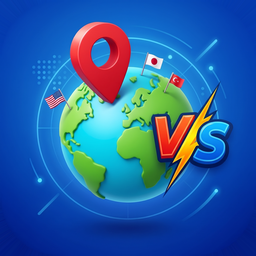

Country HuntTerms of Use
By using Country Hunt (“the app”) you accept these terms. If you do not accept them, please do not use the app’s account features. Apple’s standard license agreement also applies to the iOS version.
1. No tolerance for objectionable content or abuse
Nicknames are visible to other players. Offensive, hateful, sexual, threatening or impersonating nicknames and abusive behavior are not tolerated. You must not cheat, tamper with the app or interfere with other players or our servers.
2. Reporting and blocking
You can report a nickname and block a player from the leaderboard and from your friends list. A blocked player disappears from your lists immediately. We review reports within 24 hours and may change or remove a nickname, hide the player from leaderboards or close the account. You can also write to erensoftwareapps@gmail.com.
3. Your account
Single-player modes work without an account. You can delete your account at any time in Settings → Account → Delete account. See the Privacy Policy.
4. Ads
The app is free and shows ads. Some features can be unlocked by choosing to watch an ad.
5. The service
The app is provided “as is”. Leaderboards and duels may change or be unavailable at times, and we may correct or remove scores that appear invalid. Geographic content is for education and entertainment; borders and names are not a statement on any territorial dispute.
6. Changes
We will update this page if these terms change and show the new effective date above.
Kullanım Koşulları
Country Hunt uygulamasını (“uygulama”) kullanarak bu koşulları kabul edersiniz. Kabul etmiyorsanız uygulamanın hesap özelliklerini kullanmayın. iOS sürümünde Apple’ın standart lisans sözleşmesi de geçerlidir.
1. Uygunsuz içeriğe ve kötü davranışa tolerans yok
Takma adlar diğer oyunculara görünür. Hakaret, nefret, cinsellik, tehdit içeren ya da başkasını taklit eden takma adlara ve kötü davranışa izin verilmez. Hile yapamaz, uygulamayı kurcalayamaz, diğer oyuncuları ya da sunucularımızı rahatsız edemezsiniz.
2. Şikâyet ve engelleme
Sıralamadan ve arkadaş listenizden bir takma adı şikâyet edebilir, oyuncuyu engelleyebilirsiniz. Engellediğiniz oyuncu listelerinizden hemen kalkar. Şikâyetleri 24 saat içinde inceleriz; takma adı değiştirebilir veya kaldırabilir, oyuncuyu sıralamadan gizleyebilir ya da hesabı kapatabiliriz. Ayrıca erensoftwareapps@gmail.com adresine yazabilirsiniz.
3. Hesabınız
Tek oyunculu modlar hesap gerektirmez. Hesabınızı istediğiniz zaman Ayarlar → Hesap → Hesabı sil yolundan silebilirsiniz. Ayrıntılar: Gizlilik Politikası.
4. Reklamlar
Uygulama ücretsizdir ve reklam gösterir. Bazı özellikler isteyerek reklam izleyince açılır.
5. Hizmet
Uygulama “olduğu gibi” sunulur. Sıralama ve düellolar değişebilir ya da zaman zaman kullanılamayabilir; geçersiz görünen skorları düzeltebilir veya silebiliriz. Coğrafi içerik eğitim ve eğlence içindir; sınırlar ve adlar herhangi bir toprak anlaşmazlığında görüş bildirmez.
6. Değişiklikler
Bu koşullar değişirse sayfayı günceller ve yukarıdaki yürürlük tarihini değiştiririz.